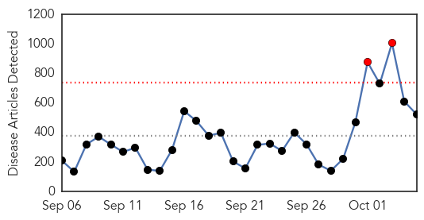
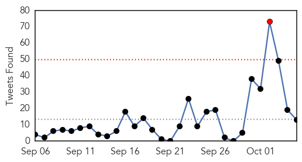
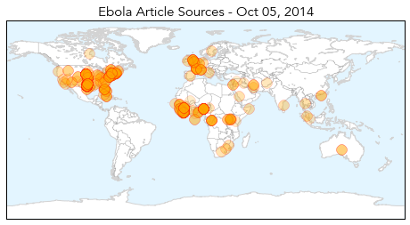
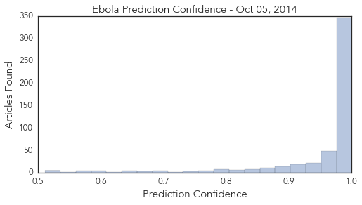

Toggle navigation
Early Warning
Daily Alerts
Ebola
Oct 05, 2014
Compare to:
-
Dengue Fever
Hemmorhagic Fever
Mold/Fungal Infection
Influenza
Meningitis
Pertussis / Whooping Cough
Middle East Respiratory Syndrome
Cholera
Hepatitis
Chikungunya
Yellow Fever
Bubonic Plague
West Nile Virus
Swine Flu
Measles
Unknown
Mumps
30 Day Trends
Web: 2
alerts
, 0
warnings
Twitter: 2
alerts
, 0
warnings
Top Articles:
Showing top 50 articles...
1.000
People scared, but outbreak unlikely
1.000
It’s highly unlikely that you’ll become infected with Ebola. So what are you so afraid of?
1.000
Local health experts prep for Ebola
1.000
High risk Ebola could reach France and UK by end-Oct, scientists calculate
1.000
Two health workers in W. Africa cured of Ebola in Europe
1.000
Ebola threat in US, and we're not prepared to contain it, experts warn
1.000
SGGP English Edition- Ministry asks local gov’t to watch out for Ebola
1.000
Aid workers ask where was WHO in Ebola outbreak?
1.000
CHRONOLOGY-Worst Ebola outbreak on record tests global response
1.000
Ebola outbreak is nearing possible end in Nigeria -- ATLANTA, Sept. 30, 2014 /PRNewswire-USNewswire/ --
1.000
The facts about Ebola
1.000
Ebola Patient in Dallas Hospital Takes Turn for Worse
1.000
Anxiety rising in U.S., but expert says Ebola outbreak 'extraordinarily unlikely'
1.000
French Ebola Patient Recovers
1.000
Ugandan doctor with Ebola named
1.000
High Risk Ebola Could Reach France and UK by End-Oct, Scientists Calculate
1.000
Ebola in Dallas: What We Know About Thomas Duncan, 1st Ebola Case Diagnosed in U.S.
1.000
How the world’s health organizations failed to stop the Ebola disaster
1.000
State health officials: Maryland is prepared to respond to ebola
1.000
now back in hospital amid fears it's returned
1.000
Officials: 9 people directly exposed to Texas Ebola patient
1.000
From Ebola to enterovirus-D68, don't panic and keep hand-washing
1.000
Patient Has 'Taken a Turn for the Worse'
1.000
From Guinea to Dallas: Tracing the Ebola threat
1.000
Ebola could reach France and UK in weeks, scientists warn
1.000
Ebola Outbreak In Dallas May Be Contained
1.000
US Patient Thomas Eric Duncan 'In Critical Condition'
1.000
Ebola could reach France, UK by month’s end
1.000
U.S. and airlines consider new screenings for Ebola, no travel ban
1.000
Ebola: Everything You Need to Know -- The Motley Fool
1.000
French Ebola Patient Cured; Duncan 'Critical'
1.000
Aid workers ask where was WHO in Ebola outbreak?
1.000
Fears of Ebola spread as US patient fights for his life
1.000
How the world let Ebola spread
1.000
Ebola could hit UK 'within three weeks', scientists warn
1.000
100 potential Ebola victims reported by hospitals on high alert for deadly virus
1.000
Did WHO underestimate Ebola crisis?
1.000
100 possible Ebola cases assessed in US, and one is confirmed
1.000
Ebola Patient Fights for Life as Contacts are Monitored
1.000
Seeking a better Ebola vaccine at UNM
1.000
U.S. working on new screenings for Ebola but no travel ban
1.000
High risk Ebola could reach France and UK by end-October, scientists calculate
1.000
Ebola in U.S.: People scared, but outbreak unlikely
1.000
People are scared, but an outbreak still unlikely
1.000
Former KPIX 5 Reporter Quarantined For Deadly Ebola Virus Is “Risk Free” « CBS San Francisco
1.000
Why Closing Borders Won't Solve The Ebola Crisis
1.000
The Scariest Thing About Ebola Has Nothing to Do With the Virus
1.000
U.S. working on new screenings for Ebola but no travel ban
1.000
UN to send vehicles to fight Ebola in West Africa
1.000
Ebola Patient in Dallas Hospital Takes Turn for Worse
Top Tweets:
0.905
Saudi Arabia: No MERS and Ebola cases among pilgrims .. 134 suspected MERS cases tested negative.
http://t.co/slpjbV46zJ
0.810
RT: .@Virology_Bonn The world doesn't need can't handle MERS right now. Marburg in Uganda Ebola…
0.734
CDC’s 1 priority: protecting Americans from health threats. Ebola anywhere is a threat everywhere.
0.606
We will stop Ebola outbreak in its tracks in the US.
0.593
Healthcare workers: consider Ebola and travel histories so we can ID and isolate patients quickly.
0.593
CDC has partner labs in every region of the country for Ebola diagnosis.
0.590
CDC continues to help medical staff gain confidence with recommended Ebola infection control & case identification
http://t.co/7GYcFkBc6T
0.532
Please follow for local updates on Ebola
0.504
RT: Brother of Ugandan man who died of Ebola-like Marburg virus is showing symptoms and under isolation testing
http://t.co/O…
Web/News Articles

Tweets

Article Locations

Article Confidences
